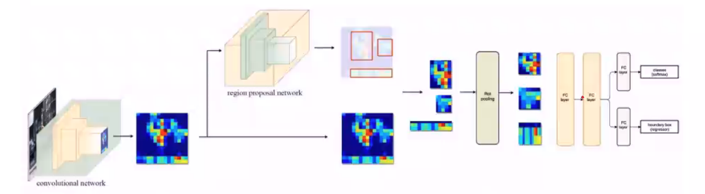
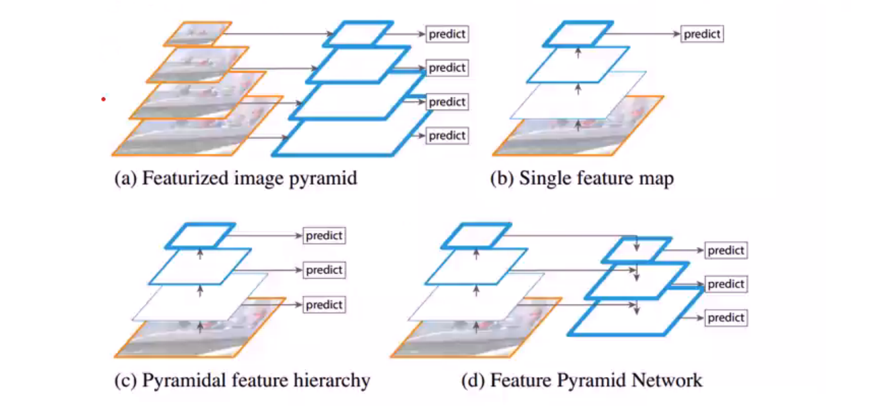
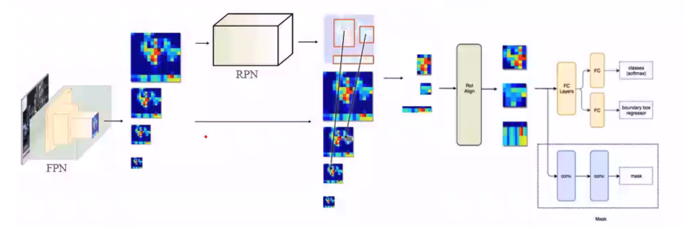

RCNN series
Outline
From R-CNN to Mask RCNN
- R-CNN
- Fast R-CNN
- Faster R-CNN
- FPN
- FPN + RPN + Fast R-CNN = Faster R-CNN
- FPN + RPN + Fast R-CNN + Mask Prediction = Mask R-CNN
Mask R-CNN
- ROI Align
- Bilinear interplolation
- RoI pooling->RoI align
- Loss Function
- Application
From R-CNN to Mask R-CNN
Let’s first go through those methods on how they detect object:
Traditional method
sliding windows detector. However, brute force approach cost too much time.
R-CNN

Selective Search. Cluster them with colors/ … which have similar features. Then merge these proposals.
Ideas:
- Region proposal: selective search 2000 RoIs
- Bounding box regression and classification
Bounding Box
Proposal: $P_x, P_y, P_w, P_h$
Ground Truth: $G_x, G_y, G_w, G_h$
Mapping: The target is to learn parameters: $d_x, d_y, d_w, d_h$.
Fast R-CNN
Apply the region proposal method on the feature maps directly

Ideas:
- Region proposal from feature maps instead of input image
- Warp the patches to a fixed size using ROI pooling
Limit: Still use selective search which is time-consuming
ROI Pooling

If we want 2 x 2 max pooling, then the final size of square will not be the same.
Faster R-CNN

Replaces the region proposal method by an internal deep network
Ideas: Get region proposals by region proposal network (FPN)
Limit: Only use single scale feature map for detection
RPN

Prediction: For each location in feature maps, RPN make k guess.(k anchors).
Training: which object is the anchor responsible for? According to IoU.
FPN
Faster R-CNN is a sinle sacle object detection and may miss small objects.

a) time consuming
b) faster rcnn: single scale object
c) SSD
d) FPN: Accurage location + High semantics
ResNet FPN

How to assign RoIs of different scales to the pyramid levels?
$k = [k_0 + log_2(\sqrt{wh}/ 224)]$
Mask R-CNN

FPN+RPN+Fast R-CNN+Mask Prediction = Mask R-CNN
Backbone: ResNet-FPN
Head: Bounding box regression, classification and Mask prediction
End of Post
at 11:59